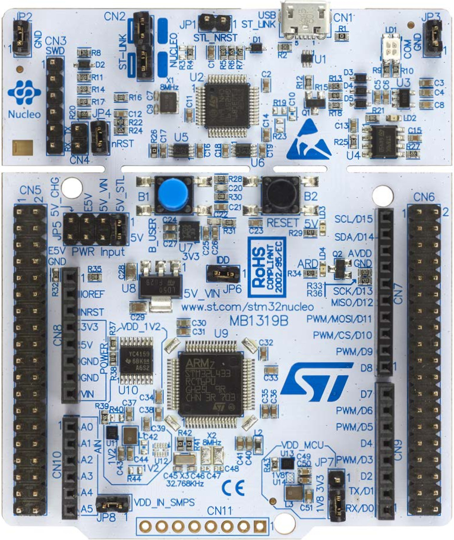

This project is a template of an expansion board for the STM32 Nucleo-64-P Boards.
This project includes a PCB edge defined as the same size as the STM32
Nucleo-64-P boards with the Morpho connectors placed correctly to align
the two boards. All IO present on the Morpho connector are connected
to the project through 0.1" expansion headers.
